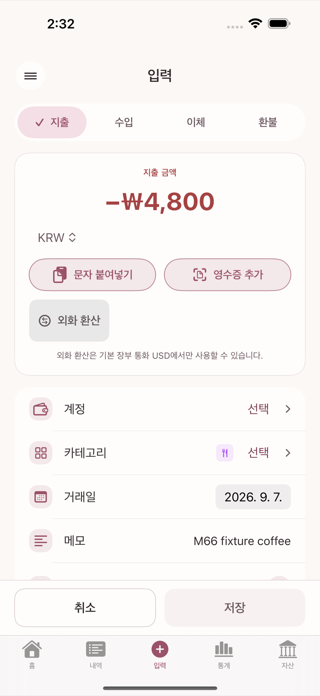
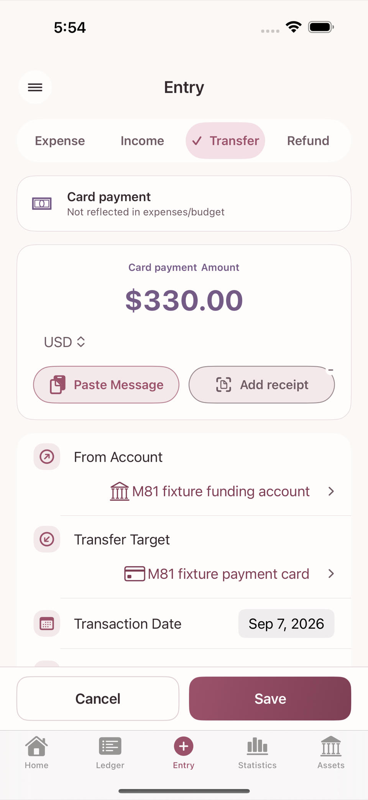

The entry screen is the one you will use most. Across the top are four segments: Expense · Income · Transfer · Refund. This chapter shows how each type affects account balances and budgets differently.

Paying a credit card bill from a bank account is not an expense; it is handled as a kind of transfer (a card payment). The spending was already reflected in budgets and statistics at the moment you used the card, so paying the bill is only "moving money from an account to the card to settle the debt". This distinction is what keeps the same spending from being counted twice.
In the Transfer segment, choose a credit card account as the Transfer Target and the screen switches to card payment mode by itself, showing the notice "Not reflected in expenses/budget". There is no separate "card payment" tab to find first — just set the transfer target to a credit card.

When money comes back from a card issuer or a merchant it looks like a deposit into your account, but the three types mean different things.
| Entry type | Meaning | Effect on expenses and budgets |
|---|---|---|
| Transfer | Position only, among your accounts, cash, and card debt | Does not reduce any cost |
| Income | Newly earned money | Increases funds available to allocate, but cancels no specific expense |
| Refund | Reverses all or part of a previously recorded cost | Reduces that cost and the spent amount of its budget group |
Record a refund as a transfer and the account balance looks right while the original expense and the budget usage stay behind. Record it as income and the expense stays put while income rises, which changes what the statistics mean. That is why refund is its own type.
Partial refunds are supported. The refunds linked to one original transaction cannot add up to more than the original expense. Saving does not modify the original: it creates one new transaction and leaves the original as it was. A refund lands in the budget and statistics of the date the refund happened, not the month of the original transaction. So a period containing only refunds can show negative spending or negative budget usage for that category.
Linking the original transaction is optional, but recommended for the automatic fill-in and the protection against over-refunding. Receipts, attachments, and tags on the original are not copied to the refund. If you need proof of the refund, attach it to the refund transaction separately.
When a single payment mixes several kinds of spending (groceries and household goods in one supermarket trip, say), use Split entry. This is not a separate screen: turn on the "Split entry" switch above the category field on the Expense entry screen and the same screen turns into a split-line editor. Each split line can have its own category and amount, and the Split total must exactly equal the full payment amount.